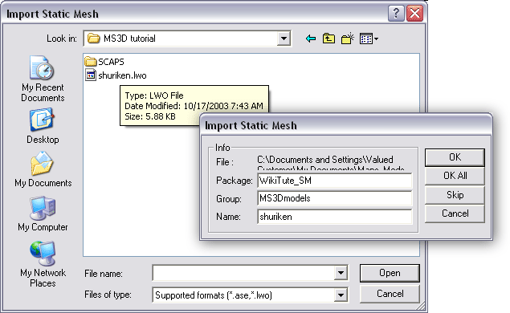

MilkShape For UT2003 Static Meshes/Export And Import
NOTE: The pictures in this tutorial do not show the interface elements to relative scale.
Export and Import
Exporting models from MS3D for use as static meshes in UEd3 is very straightforward. UEd can import models in the LWO (Lightwave object) format, extension .lwo. However, the MS3D Export menu roll-out has three LWO options – my experience is that the one shown in FIG 13. works best when configured as shown.
![[MS3D-LWOexport]](images/ms3d-lwoexport.gif) FIG. 13 LWO export options to use in MilkShape 3D |
Note that ALL objects in a MilkShape model file are exported – separate .lwo files must be made for each object to be imported as a separate static mesh in UEd.
The origin of the MS3D workspace will define the pivot point for static meshes made from MS3D models. This can be useful when building a complex assortment of objects that must fit together in UEd, but are exported as separate LWOs (e.g. the facades of a building, and its rooftop edge trim). After building the components to fit in MS3D, make separate files of each component for export, but do not move the objects in the component files. In UED the parts can be easily reassembled due to the common pivot point for all the component static meshes.
Use the options described above to export the shuriken model to filename shuriken.lwo. Save the LWO export in any convenient directory.
Launch UEd3, and open the Textures browser. Prior to importing the LWO file as a static mesh, there MUST be textures present in the Texture browser with names that match the material names assigned to the model in MS3D. Any material name that is not found will be assigned Texture'Engine.DefaultTexture' (bleah!), and smoothing info based on material names may be lost.
In the Textures browser, use File>Import to create a new texture; use Package: MilkShapeMaterials, Group: NamedMaterials, and Name: hubs. Add textures named UpSUrf and DownSurf to this package and save it (FIG. 14).
![[MS3DT-14]](images/ms3dt-14.gif) FIG. 14 Creating UEd textures named to match the MS3D material names. |
Texture name spelling in UEd must exactly match those assigned in MS3D, but is not case-sensitive. The actual textures imported are irrelevant – the same texture file could be used for all three differently named textures. Only the naming is important.
Switch to the Static Mesh browser. Use File>Import to open the dialog, and select the shuriken.lwo file. Use Package: WikiTute_SM, Group: MS3Dmodels, Name: shuriken, click OK.

FIG. 15 Static mesh import dialogs |
You will get the following Message dialog – just click OK.
![[MS3DT-16]](images/ms3dt-16.gif) FIG. 16 LWO import warning |
The warning is (afaik) because the materials used have no texture files associated with them as yet (this will be changed in Part 4 of the tutorial). The warning can be ignored – it does not affect the import.
In the Static Mesh browser display, the shuriken should now be visible, and the Materials property section should list the three material names hubs, UpSurf, and DownSurf. Textures on the model will reflect those you chose when creating the MilkShapeMaterials package.
![[MS3DT-17]](images/ms3dt-17.gif) FIG 17. The imported shuriken model with assigned UEd textures |
Save the WikiTute_SM static mesh package.
In the browser, the shuriken static mesh is Unlit and thus doesn't show the smoothing properly – it has to be placed in a map with a lighting setup. Open (or create) a map with relatively bright and directional lighting (too dim & flat a lighting scheme and the smoothing may be harder to see). Click the Insert Static Mesh in Level button to place shuriken at the current camera position, then pull back the camera in the 3D window.
Inspect shuriken from a number of viewpoints, noting that there is a visible hard-edge boundary between the hubs, UpSurf, and DownSurf sections – the smoothing groups from MS3D have been preserved by assigning the three material names for export/import.
The edges may be difficult to see clearly if three differently-colored textures were created in the MilkShapeMaterials package. In the Textures browser, select one of the textures, preferably one not too light or dark. In the Static Mesh browser, assign this single material to all three Materials property slots for shuriken. In the map, the static mesh will become monochrome, but the smoothing and edges are not changed.
![[MS3DT-18]](images/ms3dt-18.gif) FIG. 18 A monochrome shuriken shows smoothing & edges clearly |
This is an important aspect of the model – once imported with separate material names to define smoothing, it doesn't matter what textures are actually assigned in UEd, the smoothing will be preserved. Thus, if a static mesh must have hard edges, but is planned to have only a single texture, multiple materials should be applied in MS3D to define smoothing and edges. Once imported into UEd, all Materials slots can be given the same texture.
Example: for a concrete-textured cube, three materials need be assigned in MS3D, one each for the opposing pairs of faces of the cube.
Next: Applying File Textures in MS3D